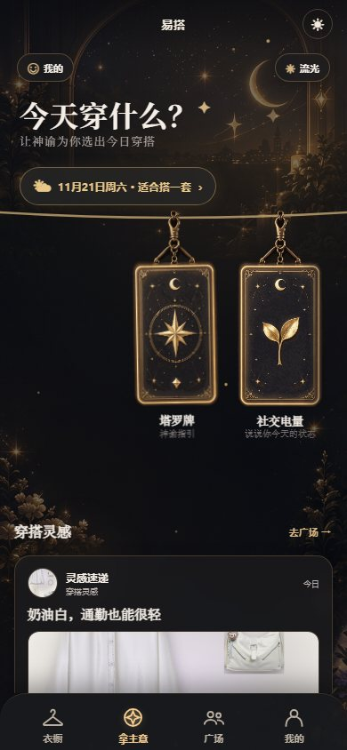
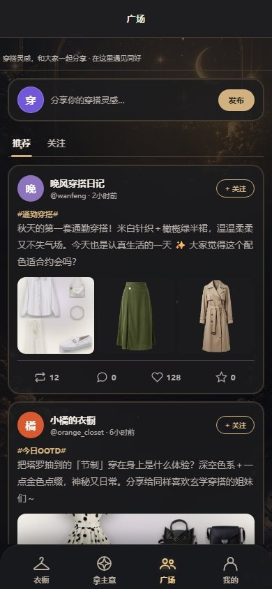
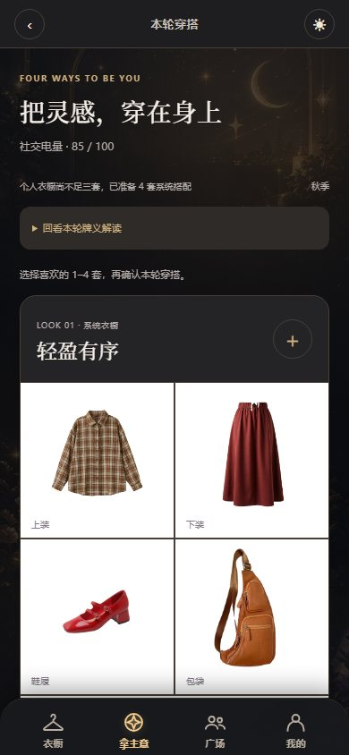

YIDA · PROJECT NAVIGATION
✅ 最新版本 · 2026-11-21 · 当前维护
易搭 YIDA
电子衣橱 × 穿搭灵感 · 本地优先的移动端应用
五种玩法收集当日状态，规则引擎从衣橱组合出 4 套搭配，一键确认进历史与海报；另有微博式广场与个人主页。无构建工具、无后端依赖，数据只留在本机浏览器。
预览须知：这是纯前端静态展示版，无账号、无云端调用，建议用手机或浏览器设备模式（390 × 844）。
「我的衣橱 → 添加衣物」会走本机降级（不抠图、保留原背景、标签手动核对），页面会明确提示——这是设计行为，不是故障。发布签名、keystore 与服务端能力不在公开范围。
「我的衣橱 → 添加衣物」会走本机降级（不抠图、保留原背景、标签手动核对），页面会明确提示——这是设计行为，不是故障。发布签名、keystore 与服务端能力不在公开范围。
01效果预览



02版本状态（哪个是最新的）
| 目录 / 内容 | 项目 | 状态 | 最后更新 |
|---|---|---|---|
| 根目录 `frontend/` · `android/` · `docs/` | 易搭 YIDA（本页预览的成品） | ✅ 最新 · 当前维护 | 2026-11-21 |
| git 历史 `2154cff` 及之前 | 易搭整合版 1.0（v1 历史快照） | 🗄 历史归档 | 2026-11-10 |
| `archive/outfit-mystic/` | outfit-mystic 黑客松版本（v0） | 🗄 归档 · 不再维护 | 2026-11-11 |